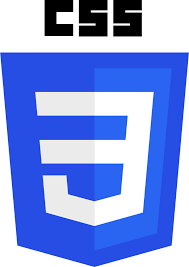
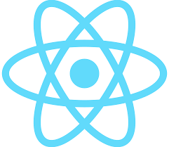
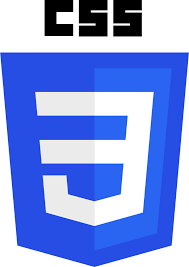
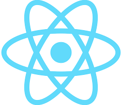
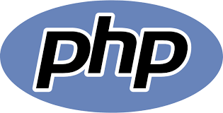
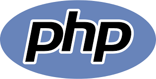
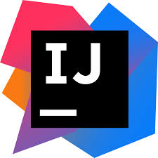
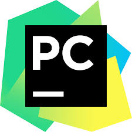
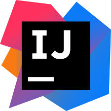
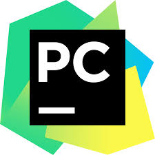

I am Ravi Pratap Verma, a highly motivated and detail-oriented final-year B.Tech student specializing in Computer Science and Engineering at the prestigious National Institute of Technology, Patna (Roll No.: 2106190). With a current CGPA of 7.89, I have consistently demonstrated academic excellence, which is also evident from my earlier achievements, including securing 96% in my intermediate examinations as the District Topper of Maharajganj and 78.2% in high school under the Central Board of Secondary Education. Over the years, I have built a solid foundation in core computer science disciplines, excelling in courses such as Data Structures and Algorithms, Object-Oriented Programming, Artificial Intelligence, Operating Systems, Database Management Systems, Computer Networks, and Software Engineering. My technical expertise spans several programming languages, including C, C++, Java, Python, JavaScript, Node.js, and TypeScript, along with frameworks like React.js, Bootstrap, and Tailwind CSS. I am proficient in database management using MySQL and possess hands-on experience with developer tools such as Visual Studio Code, Sublime Text, PyCharm, IntelliJ IDEA, and GitHub. Through practical implementation, I have undertaken a variety of projects that reflect my technical skills and innovative approach. These include an Amazon Clone, a responsive e-commerce platform featuring user authentication, product catalog management, and a shopping cart, and a Facebook Clone, a social media application incorporating profile creation and newsfeed functionalities—both developed using HTML, CSS, and JavaScript. I also developed a Temperature Converter and a Banking System in C++, which included comprehensive functionalities such as account management, transaction processing, balance inquiries, and fund transfers. My coding journey has been equally impactful, with achievements such as under-40 rank in college on GFG, solving 900+ GFG problems, 150+ problems on LeetCode, and earning a Bronze Badge on CodeChef. I have solved over 1500+ DSA/CP problems across various platforms, underscoring my problem-solving abilities and logical acumen. My dedication to continuous learning has earned me a spot in the Top 2% of the NPTEL Python course, further showcasing my commitment to expanding my technical knowledge. In addition to academics, I have actively taken up leadership roles and responsibilities that highlight my organizational and interpersonal skills. I have been a Core Member of Sankalp (NSS) since 2022, contributing to initiatives aimed at children’s development and youth empowerment. As an Event Lead at Yuvamanthan Hackathon, I successfully organized and managed events, demonstrating my ability to handle responsibilities under tight deadlines. My role as Class Representative since 2022 reflects my ability to propose and implement improvements to enhance the student experience. I also served as a Hostel Representative, coordinating operations and guest experiences from January to November 2022. Furthermore, my participation in co-curricular activities has been extensive, including being an active member of the DSA Core Team and leading various events such as Debate Competitions and Hackathons. My technical interests lie in Web Development, Software Development, Competitive Programming, and Machine Learning, and I constantly strive to upskill in these areas. With strong communication skills, a collaborative attitude, and an unyielding commitment to excellence, I aim to leverage my technical expertise and leadership abilities to contribute meaningfully to the field of computer science and technology. I am driven by a passion for problem-solving and innovation and aspire to be at the forefront of technological advancements.


My favorite languages for systems programming, software engineering, and data analysis.
 



My preferred technologies for front-end web development and component design.
 


My preferred technologies for back-end web programming and database architecture.
 



My favorite tools for version control, code editing, and container orchestration.
I created a Facebook frontend project featuring user authentication, profile creation, and a dynamic news feed. It focused on responsive design, seamless navigation, and real-time updates to replicate the platform's interface. This project strengthened my skills in designing intuitive layouts, managing interactivity, and implementing functional, user-friendly web applications.
Check it out!I developed an Amazon frontend project with features like user authentication, product catalog, and a functional shopping cart. The design emphasized responsiveness and an intuitive user interface. This project enhanced my skills in creating interactive layouts, handling dynamic content, and delivering a user-friendly experience for e-commerce platforms.
Check it out!I created a login-registration page with responsive design and secure user authentication. It included interactive forms with validation, error handling, and smooth navigation. This project improved my ability to build intuitive and functional user interfaces for authentication systems.
Check it out!I developed an airline management system in C++ to manage flight booking, ticket cancellations, and passenger details efficiently. The system featured a user-friendly interface and included functionalities such as seat availability tracking, fare calculation, and flight schedule management. It utilized object-oriented programming principles, employing classes, inheritance, and modularity to ensure clarity and scalability. This project enhanced my understanding of C++ concepts such as data structures, loops, and conditional statements, while showcasing my ability to design and implement robust management systems.
Check it out!